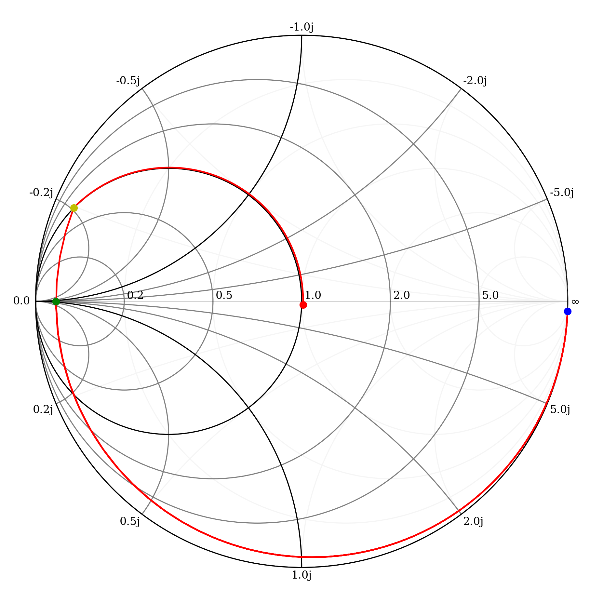

[7]:
import numpy as np
import matplotlib.pyplot as plt
from pylab import *
from skrf.media import DistributedCircuit
from skrf import Frequency
from skrf import network
from skrf.network import *
from skrf import plotting
import matplotlib.pyplot as plt
from IPython.display import Image
%matplotlib inline
my_params = {
'figure.dpi': 240,
'figure.figsize': [10,10],
'figure.subplot.left' : 0.15,
'figure.subplot.right' : 0.9,
'figure.subplot.bottom' : 0.12,
'axes.titlesize' : 'medium',
'axes.labelsize' : 10 ,
'ytick.labelsize' :'small',
'xtick.labelsize' :'small',
'legend.fontsize' : 8, #small,
'legend.loc' : 'best',
'font.size' : 10.0,
'font.family' : 'serif',
'text.usetex' : False, # if you dont have latex
}
rcParams.update(my_params)
[8]:
## Defino las funciones para agregar componentes en derivación (Zparal) y en serie (Yserie).
## La salida es una variable Network de skrf
def Yserie(freq, ys, z0=50):
y = np.empty(shape=(len(freq.f),2,2), dtype=complex)
for i,f in enumerate(freq.f):
y[i,0,0] = ys
y[i,0,1] = -ys
y[i,1,0] = -ys
y[i,1,1] = ys
a = network.y2s(y,z0=z0)
ntwk = Network(frequency=freq, s= a, z0=z0)
return ntwk
def Zparal(freq, zp, z0=50):
z = np.empty(shape=(len(freq.f),2,2), dtype=complex)
for i,f in enumerate(freq.f):
z[i,0,0] = zp
z[i,0,1] = zp
z[i,1,0] = zp
z[i,1,1] = zp
a = network.z2s(z,z0=z0)
ntwk = Network(frequency=freq, s= a, z0=z0)
return ntwk
## Convierte a network de skrf una impedancia de carga dada.
def ZL(freq, zl, z0=50):
z = np.empty(shape=(len(freq.f),1,1), dtype=complex)
for i,f in enumerate(freq.f):
z[i,0,0] = zl
a = network.z2s(z,z0=z0)
ntwk = Network(frequency=freq, s= a, z0=z0)
return ntwk
## Convierte a network de skrf una admitancia de carga dada.
def YL(freq, yl, z0=50):
y = np.empty(shape=(len(freq.f),1,1), dtype=complex)
for i,f in enumerate(freq.f):
z[i,0,0] = yl
a = network.y2s(z,z0=z0)
ntwk = Network(frequency=freq, s= a, z0=z0)
return ntwk
# Calcula X dada una frecuencia y un valor de capacidad
def Xc(f, C):
if C == 0 : x = -np.inf
else : x = -(2*np.pi*f*C)**-1
return x
# Calcula X dada una frecuencia y un valor de inductancia
def Xl(f, L):
return (2*np.pi*f*L)
# Calcula B dada una frecuencia y un valor de inductancia
def Bl(f, L):
if L == 0 : y = -np.inf
else : y = -(2*np.pi*f*L)**-1
return y
# Calcula B dada una frecuencia y un valor de capacidad
def Bc(f, C):
return (2*np.pi*f*C)
# print datos
def printZ(Z):
r = Z.real
x = Z.imag
if x == 0 : Q = np.inf
else: Q = abs(x/r)
print('R = {:1.3e} ohms'.format(r))
print('X = {:1.3e} ohms'.format(x))
print('Q = {:1.2f} '.format(Q) )
return
Es importante correr el código siguiente en orden para no alterar los valores guardados en nw¶
Los datos empleados para los calculos: RL = 2.0 ohm C = 7.797e-09 F rpcs = 0.200 ohm L = 2.1187e-04 Hy rpls = 1.000 ohm rg = 50.00 ohm ig = 4.00 Ap
[3]:
Image(filename= "fig/eje2.png",width=450)
[3]:

[4]:
fo = 2e6
wo = 2*np.pi*fo
# componentes
C = 7.797e-09
rpcs = 0.2
Qoc = 1/(wo*C*rpcs)
rpcp = rpcs*(1+Qoc**2)
#Qmc = (wo*C*rpcs)
L = 2.1187e-04
rpls = 1.000
## Frecuencia de trabajo
freq = Frequency(2,2,1,'mhz')
print('fo = {:0.4} Hz'.format(float(freq.f) ) )
# impedancia de referencia
z0 = 100./2
# impedancia de carga
RL = 2
CL = 30e-12
fo = 2e+06 Hz
[5]:
# Defino el valor de capacidad paralelo
CLs = np.linspace(CL, CL*1000, 1000)[::-1]
# Defino el valor de inductancia serie
L1s = np.linspace(L/100, L, 1000)
# Defino el valor de capacidad paralelo
C1p = np.linspace(C/100, C, 1000)
# Defino el valor de las perdidas
rpc = np.linspace((rpcs)*10, (rpcs), 10)
## Sin perdidas !
nw1 = ZL(freq,RL,z0)
nw = nw1
for c in CLs:
nwa = Yserie(freq,1j*Bc(freq.f[0],c),z0)
nw2 = cascade(nwa,nw1)
nw = stitch(nw,nw2 )
print('ZL')
printZ(nw.z[-1,0,0])
for l in L1s:
nwa = Yserie(freq,1j*Bl(freq.f[0],l),z0)
nw3 = cascade(nwa,nw2)
nw = stitch(nw,nw3 )
print('ZL serie con L')
printZ(nw.z[-1,0,0])
for c in C1p:
nwa = Zparal(freq,1j*Xc(freq.f[0],c),z0)
nw4 = cascade(nwa,nw3)
nw = stitch(nw,nw4 )
print('ZL serie con L en paralelo con C')
printZ(nw.z[-1,0,0])
ZL
R = 2.000e+00 ohms
X = -2.653e+03 ohms
Q = 1326.29
ZL serie con L
R = 2.000e+00 ohms
X = 9.855e+00 ohms
Q = 4.93
ZL serie con L en paralelo con C
R = 5.052e+01 ohms
X = -1.324e+00 ohms
Q = 0.03
[10]:
# plot
nw.plot_s_smith(m=0,n=0,color='r',draw_labels=True,show_legend = False, chart_type='yz')
#plotting.smith(draw_vswr=[100.0] )
nw1.plot_s_smith(m=0,n=0,color='g',draw_labels=True,show_legend = False, chart_type='yz',marker='o')
nw2.plot_s_smith(m=0,n=0,color='b',draw_labels=True,show_legend = False, chart_type='yz',marker='o')
nw3.plot_s_smith(m=0,n=0,color='y',draw_labels=True,show_legend = False, chart_type='yz',marker='o')
nw4.plot_s_smith(m=0,n=0,color='r',draw_labels=True,show_legend = False, chart_type='yz',marker='o')
print('RL = {:1.3f} ohms'.format(nw.z[0,0,0].real))
print('Zin = {:1.3f} ohms'.format(nw.z[-1,0,0]))
RL = 2.000 ohms
Zin = 50.521-1.324j ohms

[ ]:
[ ]: